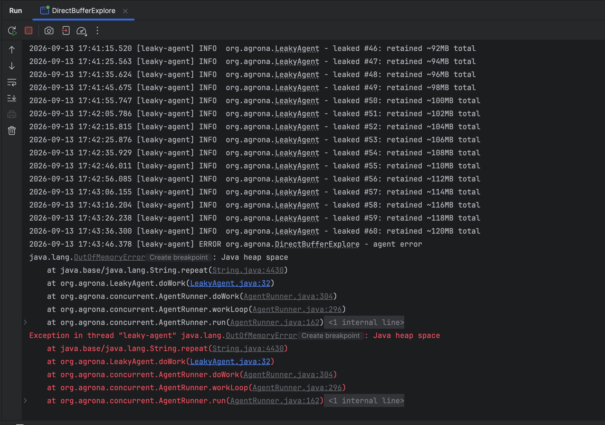
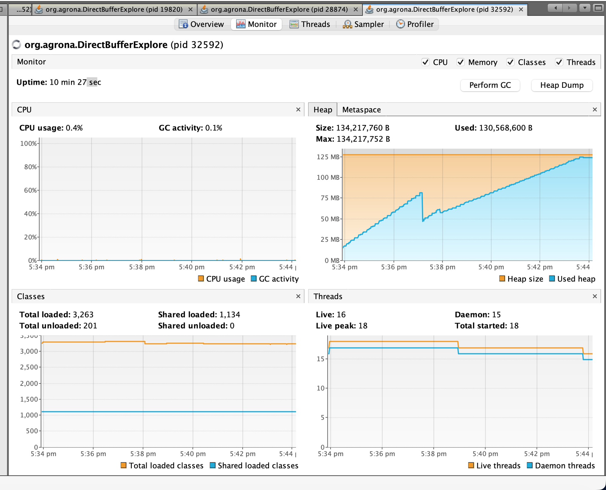

GC Deep Dive: From a Deliberate Leak to OutOfMemoryError
A hands-on exploration of G1 garbage collection, built by writing a small Agrona Agent that
deliberately leaks memory, then watching it die — in VisualVM, in the application log, and in
the JVM's own -Xlog:gc* log. This page walks through everything needed to read that story,
assuming no prior GC knowledge.
New to GC entirely? Start with GC Basics, Visually first — it covers generations, Eden/Survivor, and G1 regions with diagrams, and this page assumes that vocabulary throughout.
Companion reading: Stack vs Heap (what lives where), Shutdown Mechanisms (how the demo process starts/stops cleanly).
1. Why garbage collection exists
Every new String(...), every "x".repeat(...), every object literal carves out space on the
heap. Java has no free() — nothing ever explicitly releases that memory. Instead, the
Garbage Collector (GC) runs periodically, walks the graph of objects reachable from your
running threads (local variables, static fields, etc. — the GC roots), and reclaims memory
behind everything that isn't reachable anymore.
A memory leak in Java doesn't mean "forgot to free something" (there's no free). It means
something is still holding a reference to an object you don't actually need anymore, so the
GC — correctly, by its own rules — can never reclaim it. That's exactly what we built on purpose
below.
2. The generational hypothesis
Across nearly every GC-heavy language, one empirical pattern holds: most objects die young. A temporary string built for one calculation, a formatting buffer, a loop-local object — most garbage is created and discarded within milliseconds. Long-lived objects (caches, config, connection pools, and — in our demo — a deliberately-retained list) are comparatively rare.
Collectors exploit this by splitting the heap into generations:
| Generation | Contains | Collected | Cost |
|---|---|---|---|
| Young (Eden + Survivor) | Everything is born here | Often | Cheap — mostly garbage, few live objects to copy out |
| Old | Objects that survived enough young collections get promoted here | Rarely | Expensive — scanning a large, mostly-live set |
3. G1 specifically: a heap made of regions
Older collectors (Serial, Parallel) used one contiguous Eden space and one contiguous Old space. G1 ("Garbage First"), the default collector since JDK 9, instead chops the whole heap into fixed-size chunks called regions. Each region is labeled Eden, Survivor, Old, or Humongous — dynamically, not fixed at JVM startup. G1 always collects the regions with the most garbage in them first (hence the name), to get the best reclaim-per-millisecond-of-pause.
From a real run's log header:
Region size is chosen automatically from heap size (small heap → small regions, 1MB minimum). 128MB max heap ÷ 1MB regions = 128 regions total to work with. Remember this number — it's the ceiling everything below eventually runs into.
4. Anatomy of one young collection, line by line
- "Pause Young" — a stop-the-world pause. Every application thread freezes completely for the duration; only GC worker threads run.
- "Using 3 workers of 10" — G1 pauses are parallelized across multiple GC threads to keep them short.
- "Evacuate Collection Set: 1.8ms" — the actual work: find every object in Eden still reachable, and copy it out into a Survivor region. Anything left behind afterward is, by definition, garbage — G1 doesn't delete it object-by-object, it just marks the whole region empty and reuses it. This copy-only approach is why young collections are cheap: you only touch live objects, never the garbage.
- "Eden regions: 23->0(36)" — 23 regions were Eden before the pause; 0 after (everything
evacuated or discarded);
(36)is the new target Eden size G1 picked going forward, adapted to hit its pause-time goal. - "Survivor regions: 0->3(3)" — the objects that survived got copied into 3 fresh regions.
- "Old regions: 0->2" — a couple of long-lived objects were promoted (survived enough previous collections).
- "27M->9M(128M) 2.308ms" — the pause summary: 27MB used before, 9MB after (18MB reclaimed), out of a 128MB cap, and the entire stop-the-world pause took 2.3 milliseconds. That pause time is the number that matters for application latency.
5. Humongous objects — the key to this whole story
G1's rule: any single object ≥ 50% of the region size doesn't go through the normal Eden→Survivor→Old lifecycle at all. It's allocated directly into one or more dedicated Humongous regions, bypassing young gen completely.
With a 1MB region size, that threshold is 512KB. Our leaked strings are 2MB each — 4x over the threshold — so every single one becomes a humongous object: allocated straight into old-gen-like territory, never copied, never touched by an ordinary young collection.
The pause reason literally says (G1 Humongous Allocation) — this pause was triggered by code
requesting a 2MB allocation. G1's allocator needs 2 contiguous free 1MB regions for that request,
and does a quick young collection first (freeing up space, re-checking) before granting it. That's
a real, measurable cost of leaking (or even just frequently allocating) large objects: each one
doesn't just consume memory, it actively triggers a GC pause on the way in.
Practical takeaway
In real services, avoid allocating objects near or above half your G1 region size in hot
paths if you can help it (e.g. building one giant StringBuilder/byte[] per request
instead of streaming/chunking). Each one is a small, guaranteed GC event, and it can never be
young-collected once created — only ever compacted by a full/mixed GC.
6. Why humongous regions only ever grow (in a leak)
The format is before->after for that one pause. It's flat within a single pause (a young
collection doesn't touch old/humongous regions), but across pauses it climbs by exactly 2 every
time — one more 2MB (2-region) string retained between each tick. A young collection can never
free a humongous region that's still reachable — only a full/mixed collection that finds it
unreachable could, and ours never becomes unreachable, because our code never stops
referencing it.
7. Concurrent Mark Cycle — how G1 deals with old gen without long pauses
Old gen is rarely collected, but G1 still needs to eventually know what's garbage in there. Rather than one long stop-the-world scan of the whole old generation (which would freeze the app for a long time on a big heap), G1 does most of the work concurrently — while application threads keep running normally:
- Scan Root Regions / Mark From Roots — walk the object graph from GC roots to find everything reachable, concurrently, no stop-the-world.
- Pause Remark — a short stop-the-world pause to catch up on anything the app mutated mid-mark.
- Pause Cleanup — another short pause to finalize which regions are now known-garbage.
These pauses are single-digit milliseconds, versus what a naive full old-gen scan would cost — that's G1's whole design point: short, predictable pauses even as the heap grows, at the cost of extra background CPU.
This cycle gets triggered automatically after a humongous allocation pause (see the pattern:
Pause Young (Concurrent Start) immediately followed by Concurrent Mark Cycle). G1 uses
humongous allocations as one of its triggers to check "is it time to reclaim old-gen garbage." It
never finds much to reclaim here, because the only old-gen-ish garbage in this demo is the leak
— always reachable, never collectable.
8. The demo itself
The leaking Agent
An Agrona Agent whose doWork() is polled by an AgentRunner on its own thread — if that
sentence is unfamiliar, read Agrona's Agent Pattern, Explained first,
it covers Agent/AgentRunner/IdleStrategy from scratch. Every 10 seconds this one builds a
2MB string and appends it to a list it never clears:
Why "x".repeat(2_000_000) is ~2MB and not ~4MB: Compact Strings (JEP 254, default since
Java 9). Since 'x' is Latin-1-representable, the JVM stores the backing array as byte[]
(1 byte/char) instead of char[] (2 bytes/char UTF-16). A non-Latin-1 character would double the
size for the same character count.
Wiring it up with a real daemon thread
AgentRunner.startOnThread(runner) does NOT make a daemon thread
The no-arg overload uses Thread::new as its ThreadFactory — a thread created that way
inherits daemon-ness from its creator thread. Since main is non-daemon, the agent thread
would be non-daemon too. To actually get a daemon thread, use the
startOnThread(runner, ThreadFactory) overload with a factory that calls
setDaemon(true) explicitly, as above. Confirmed by decompiling AgentRunner.class —
the no-arg overload's bytecode only calls setName(roleName()) and start(), nothing else.
Full explanation: Agrona's Agent Pattern §5.
Reproducing this exact run
All three demo agents live in the same Main.java (renamed from DirectBufferExplore.java),
each wired up as its own commented-out AgentRunner block. To reproduce this leak run
specifically, make sure the LeakyAgent/leakyRunner block is uncommented and any others
(e.g. SurvivorDemoAgent) are commented out — only one agent should be active at a time for a
clean, unconfounded GC log.
Logging — timestamps, thread name, everything
Console output uses slf4j-api + logback-classic, configured via src/main/resources/logback.xml:
Sample output right before the crash:

Why this doesn't go through our own errorHandler
OutOfMemoryError is an Error, not an Exception. Agent.doWork() is declared
throws Exception, so AgentRunner's internal catch only wraps Exception — an Error
escapes straight past it and is handled by the JVM's default uncaught-exception handler
instead (which is why the log line above says Exception in thread "leaky-agent", printed
by the JVM itself, not by our LOG.error(...) handler — though that ran too, first).
Enabling the GC log
-Xmx128mcaps the heap small on purpose, so the leak dies in minutes instead of taking down the whole machine over a much longer, less-observable window.-Xlog:gc*:file=...is the modern (JDK 9+) unified logging flag — logs every GC phase in detail to a file, which is the only one of the three observation tools (console, VisualVM, GC log) that ends up telling the full story (see below).--add-opens java.base/jdk.internal.misc=ALL-UNNAMED— an unrelated but necessary flag on JDK 17+: Agrona'sShutdownSignalBarrierreflectively touchesjdk.internal.misc.Signalto hook SIGINT/SIGTERM, which throwsIllegalAccessExceptionwithout this flag (a real regression introduced between Aeron 1.43.0 and 1.48.0 — the older version didn't need it).
9. Reading the three observation tools together
Three tools were watched on the same run: VisualVM's Monitor tab, the application console log, and the GC log. Cross-checking them against each other is itself a performance engineering skill worth practicing.
What VisualVM's Monitor tab showed

- Used heap: climbed in a staircase pattern (~2MB step every 10s, matching the leak), with one big drop partway through (~85MB → ~40MB), then resumed climbing after — and, over the full 10-minute run shown above, kept climbing all the way to the 134MB ceiling.
- CPU usage / GC activity: sat at ~0% for almost the entire run, even in the final minute — see below for why that's actively misleading.
What the console log showed
A clean, human-readable sequence: leaked #1 ... #60, each ~10s apart, retained ~2MB, 4MB, ...
120MB total — then the OutOfMemoryError stack trace, naming the exact line
(LeakyAgent.java:32, the "x".repeat(...) call) that failed.
What the GC log showed — the part the other two hid completely
In the final ~81 seconds before death, G1 attempted 54 full stop-the-world compactions and
hit 25 "To-space exhausted" failures — a young collection tried to copy survivors out of Eden
and couldn't even find room for that, forcing an emergency full compaction that barely freed
anything (125M->124M) before immediately trying again. This is GC thrashing: the JVM
burning CPU almost continuously on GC, for almost no gain, because 120 of 128 regions were
permanently locked up as humongous objects that can never be moved or reclaimed.
VisualVM's CPU usage: 0.4%, GC activity: 0.1% — averaged over a 10-minute, once-per-second
sampled graph — made 54 full GCs crammed into 81 seconds statistically invisible. If you only
watched VisualVM, you would never know the death spiral happened. The GC log is the only source
of the three that reveals it — a lesson worth internalizing: dashboards sampled coarsely over
long windows can completely hide short, severe events. Always keep GC logging on for anything
you actually care about diagnosing.
The one big early drop, explained
This is an ordinary young collection — not triggered by a humongous allocation — that reclaimed 36MB of garbage that had piled up in Eden over the previous ~194 seconds (JIT compiler artifacts, logging objects, VisualVM's own JMX/RMI polling overhead — its management agent runs inside your process, using your heap, so watching a process changes what you're watching, a real observer effect). Crucially: this reclaim has nothing to do with the leak — the leaked strings are humongous, never in Eden, never touched by this pause. Proof: the staircase kept climbing again right after the dip; if the leak had stopped, it would have gone flat, not resumed.
The very end
The [gc,heap,exit] tag only prints when the whole JVM process terminates — not just one
thread. An uncaught OutOfMemoryError in one agent thread should, by default, kill only that
thread; main and everything else should keep running. Seeing the entire heap (including every
humongous region) collapse to near-zero here means the whole process was torn down — either a
manual stop, or something more serious cascading further. This is the one loose thread these logs
alone don't resolve — worth confirming against how the process was actually terminated whenever
you see this in a real investigation.
10. Glossary
| Term | Meaning |
|---|---|
| GC root | A starting point for reachability analysis: local variables on a thread's stack, static fields, JNI references. Anything not reachable from a root, transitively, is garbage. |
| Region | G1's fixed-size heap chunk (here, 1MB). Labeled Eden/Survivor/Old/Humongous dynamically. |
| Eden | Where new (non-humongous) objects are born. |
| Survivor | Where objects that survived at least one young collection are copied to. |
| Old gen | Long-lived, promoted objects. Collected rarely, via concurrent marking + mixed/full GCs. |
| Humongous object/region | An object ≥ 50% of region size; allocated directly, bypassing Eden; occupies 1+ dedicated regions. |
| Stop-the-world (STW) pause | A period where all application threads are frozen so GC can safely move/reclaim objects. |
| Evacuation | Copying live objects out of a region being collected (Eden→Survivor, or Survivor→Old on promotion). |
| To-space exhausted | A young/mixed collection couldn't find enough free space to copy survivors into — an emergency signal that the heap is nearly out of room. |
| Full GC / compaction | The last-resort, most expensive collection: scans and compacts the entire heap. Frequent full GCs are a red flag. |
| Concurrent Mark Cycle | G1's background (mostly non-STW) process for figuring out what's reachable in old gen, so it can be included in future mixed collections. |
11. Applying this to real performance engineering work
- Always run with
-Xlog:gc*:file=...in anything you're trying to understand, even in dev/staging. It's cheap, and it's the only one of these tools that doesn't average away short, severe events. - Watch for
(G1 Humongous Allocation)as a pause reason, and a Humongous region count that only ever grows. That combination — regardless of whether it's a "real" leak or just a large-object-heavy workload — is a direct line to unnecessary GC pauses and eventual heap pressure. - "To-space exhausted" + a burst of
Pause Fullentries close together in time is the signature of an imminent OOM — worth alerting on directly in production log-based monitoring, well before the actualOutOfMemoryErrorfires. - A monitoring dashboard sampled at 1Hz over a long window can hide a real crisis that happens in double-digit seconds. Don't trust "CPU usage: 0.4%, GC activity: 0.1%" as proof nothing bad happened — cross-check against the actual GC log when something doesn't add up.
- A thread dying from an uncaught
Erroris not the same as the JVM exiting. If you see the whole process go down, confirm whether that was requested (a stop button, a signal) or whether something cascaded — don't assume.
Related
- Agrona's Agent Pattern, Explained — the
Agent/AgentRunner/IdleStrategyplumbing this whole demo is built on. - GC Case Study: Healthy Churn — the counterpart to this page: a second agent that does normal small-object churn instead of leaking, showing the Eden→Survivor→Old cycle actually happening (which this leak's humongous objects skip entirely).
- Stack vs Heap — the memory model this whole page builds on.
- Shutdown Mechanisms — how
ShutdownSignalBarrier/AgentRunnerstart and stop cleanly, including the daemon-thread pitfall above. - Thread Visibility Issues — another example of "what you'd assume vs. what the JVM actually does," verified the same way: read the real behavior, don't guess.